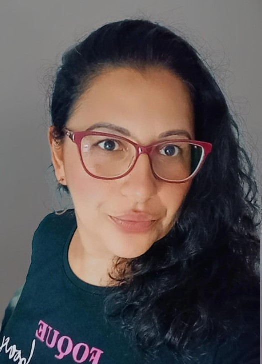
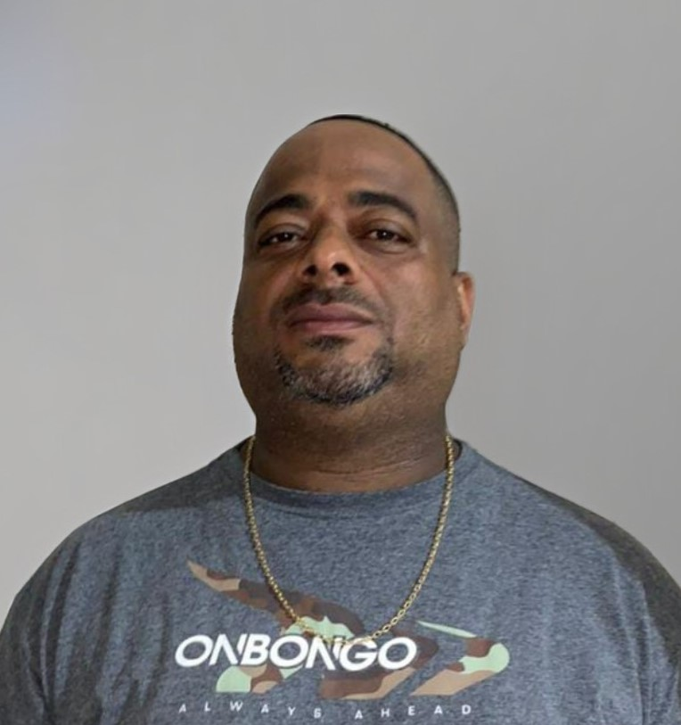
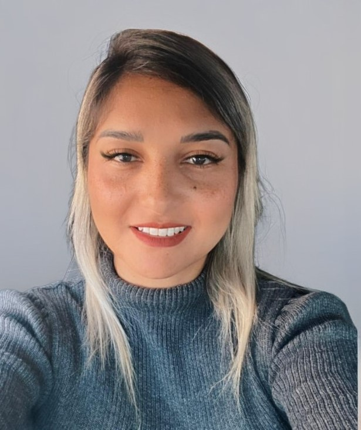
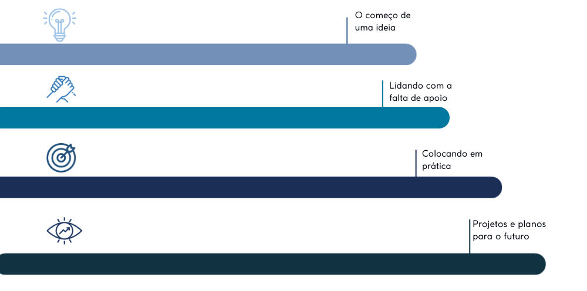

Missão
Promover inclusão social, desenvolvimento pessoal e oportunidades por meio de atividades esportivas, educativas e comunitárias.
.png)
Quem somos
Uma rede comunitária dedicada a acolher, ensinar e transformar por meio do esporte e da solidariedade.
Sobre nós
A Rede Liga do Bem é uma organização comunitária comprometida em transformar vidas através de projetos sociais, educacionais e esportivos.
O projeto nasceu para oferecer um espaço seguro, inclusivo e acolhedor para crianças, jovens e famílias da comunidade.
Base do projeto
Promover inclusão social, desenvolvimento pessoal e oportunidades por meio de atividades esportivas, educativas e comunitárias.
Ser referência em transformação social na comunidade, contribuindo para reduzir desigualdades e fortalecer famílias.
Respeito, transparência, solidariedade, responsabilidade social, inclusão, colaboração e compromisso com a comunidade.
Equipe
Valorizamos pessoas da própria região, que conhecem a realidade da comunidade e ajudam a construir soluções próximas e humanas.
.png)
Presidente

Secretária

Fiscal

Tesoureira
.png)
Fiscal
Trajetória
A Rede Liga do Bem cresceu com esforço comunitário, dedicação voluntária e confiança das famílias.
